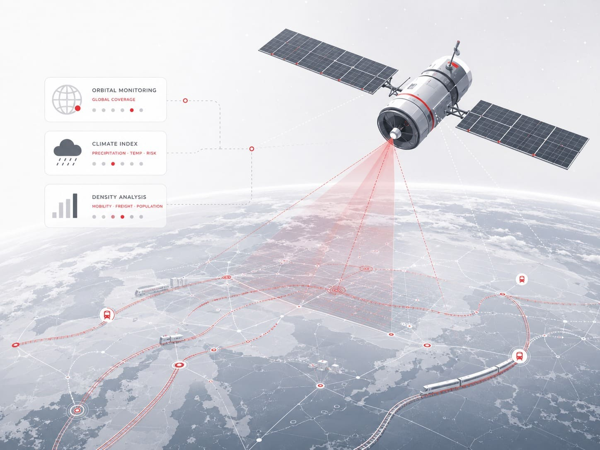

Monitoramento Orbital e Sensoriamento Remoto
Tudo começa lá no alto, através de um monitoramento orbital onde capturamos os dados brutos enviados por satélites de observação que monitoram o clima, a densidade e o movimento das regiões metropolitanas em tempo real[cite: 14, 35, 36]. Em vez de olhar apenas para o mapa comum, a nossa infraestrutura consegue organizar essas informações para mapear o impacto meteorológico antes mesmo que a primeira gota toque as vias, antecipando cenários de chuva, enchentes e condições extremas no transporte.
A grande virada dessa tecnologia espacial é conseguir identificar anomalias e riscos climáticos nas bacias que cercam os trilhos, criando uma camada de proteção e previsibilidade que os sistemas comuns de rotas simplesmente não possuem.